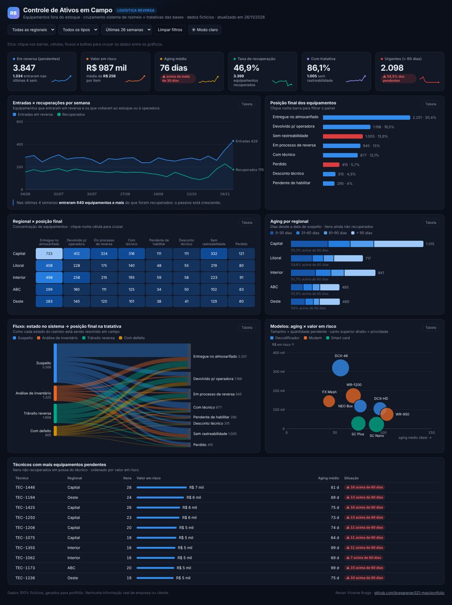
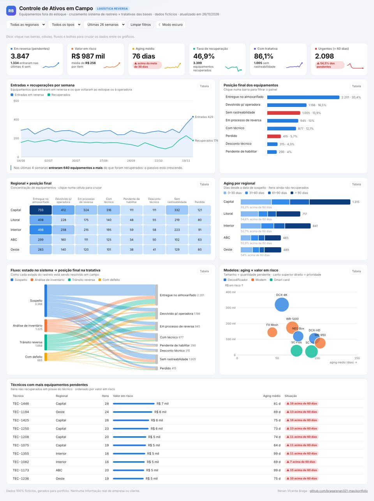

KPIs, sankey, mapa de calor e filtros cruzados entre todos os gráficos.

Mesmo painel no tema claro, com paleta validada para daltonismo.
Une várias extrações num relatório padronizado, com conferência automática.
Texto livre de técnicos de campo → categoria, data prometida e ação necessária.